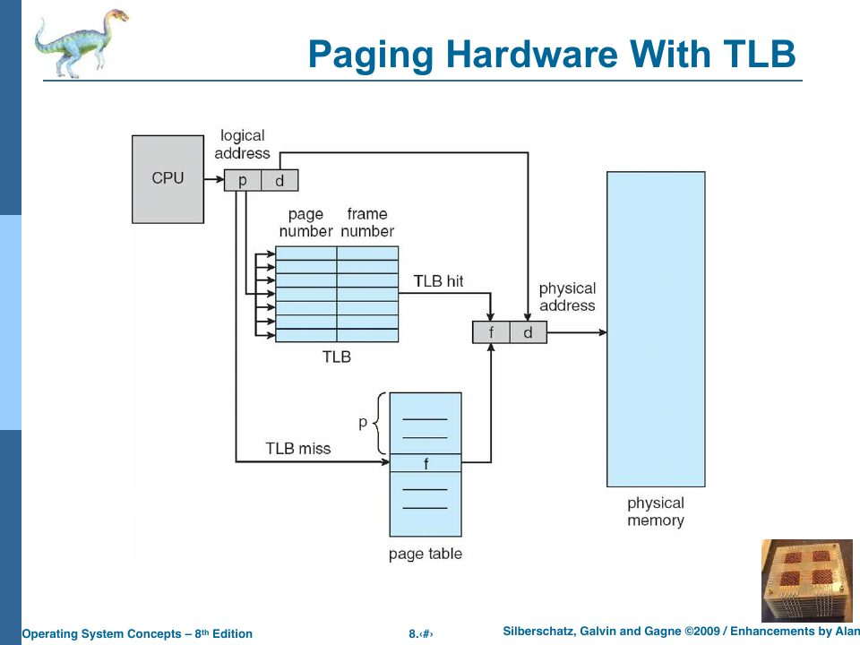
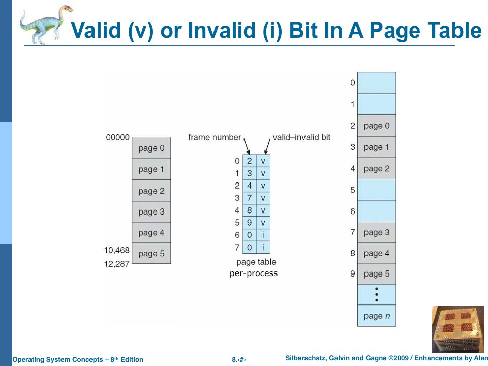

Paging
Slides: Chapter 8, “Main Memory — Part Two,” pp. 599–648.
rObSen stops at swapping. The course doesn’t: part two of Chapter 8 replaces contiguous allocation with paging, and Chapter 9 builds virtual memory on top of it. This chapter covers paging and then designs it for rObSen concretely, because seeing exactly which lines of the memory accessor and memory manager would change is the best way to understand what paging is.
A new problem
Contiguous allocation needs one unbroken hole big enough for the whole process. Slide p. 608 poses the problem: processes A (4k), B (2k), and C (3k) leave holes totalling enough room for a new 9k process G, but no single hole is 9k. “Where does it fit? It doesn’t. What can we do? Break it up!”
Paging breaks physical memory into fixed-size frames and logical memory (each process’s address space) into pages of the same size, and lets any page go in any frame (slides pp. 610–617). A page table per process records which frame holds each page. There’s no external fragmentation at all (any free frame will do), and internal fragmentation is limited to the unused part of each process’s last page, “on average, ½ frame per process” (p. 624).
Address translation
A logical address splits into a page number p and a page offset d (slide p. 618). With page size 2ⁿ, the offset is the low n bits and the page number is everything above them. The page number indexes the page table to get a frame number f; the physical address is f × page size + d.
Page size 4 = 2², so the offset is the low 2 bits. 13 =
1101₂: page 11₂ = 3, offset 01₂ = 1. Page 3 → frame 2. Physical = 2 × 4 + 1 = 9.
Keeping track of frames
The OS (the memory manager, not the hardware) keeps a free-frame table: one entry per physical frame, allocated or not, and which process owns it (slides pp. 622–623). To start a process of s pages, it finds s free frames, anywhere, and fills in the process’s page table. The page table is part of the process’s state, so it lives in (or is pointed to by) the PCB, “along with the CPU and MA stuff.”
Page size
Smaller pages mean less internal fragmentation. But they also mean bigger page tables, more page-table overhead, and less efficient disk I/O when pages are swapped, since disks prefer big transfers (slides pp. 624–625). The trade-off settles at 4 KB on most systems, with “huge pages” (2 MB, 1 GB) available for programs that map lots of memory.
Where the page table lives, and the TLB
Dedicated registers are fast but few (the PDP-11 did it). Modern page tables are large, so they live in main memory, located by a page-table base register (PTBR) and a page-table length register (slides pp. 626–628). But then “every data or instruction access requires two memory accesses: one for the page table and one for the data or instruction. (Damn!)” (p. 629).
The fix is a translation look-aside buffer (TLB): a small, fast, associative cache of recent page → frame mappings, searched in parallel (pp. 630–633). On a TLB hit, translation is nearly free; on a miss, the hardware (or OS) reads the page table in memory and adds the mapping to the TLB, evicting an old one by FIFO, random, LRU, or LFU. Some TLBs tag each entry with an address-space identifier (ASID) so entries from different processes can coexist, which avoids flushing the TLB on every context switch.

Protection: the valid–invalid bit
Each page-table entry gets a valid–invalid bit: valid means the page is part of the process’s logical address space, invalid means it isn’t (slides pp. 634–635). Touching an invalid page traps to the OS. This replaces base/limit checking: a process can only reach frames its own page table maps, so it can’t touch anyone else’s memory. Chapter 20 gives the bit a second meaning: “legal, but not in memory right now.”

Structures for big page tables
A 32-bit address space with 4 KB pages has 2²⁰ pages; at 4 bytes per entry that’s a 4 MB page table per process. The slides give three ways to tame that (pp. 636–644):
- Hierarchical paging: page the page table. With a two-level table, the 32-bit address (1 KB pages in the slides’ example) splits into a 12-bit outer index, a 10-bit inner index, and a 10-bit offset; only the inner tables actually in use need to exist (pp. 637–640). Linux uses three or four levels (pp. 646–647).
- Hashed page tables: hash the virtual page number into a table of chains, common for address spaces over 32 bits (pp. 641–642).
- Inverted page tables: one entry per physical frame (not per virtual page) holding (PID, page). Memory for the table scales with physical memory, not with every process’s virtual space, but finding a page means searching (pp. 643–644). Alan’s aside on the slide: “FAT = Frame Allocation Table?” The analogy with the disk’s file allocation table (one entry per block) is exact.
Paging, designed for rObSen
Now make it concrete. Choose a page size of 32 bytes (2⁵): it divides 256 and 768 evenly and keeps the numbers small.
- Physical memory: 768 / 32 = 24 frames.
- Logical address space per process: 256 / 32 = 8 pages, addresses
$00–$FF. - A logical address splits as
page = address >> 5(top 3 bits) andoffset = address & 0x1f(low 5 bits).
The PCB loses base, limit, and segment, and gains a page table:
public pageTable: number[] = new Array(8).fill(-1); // page → frame, -1 = invalid
The memory manager keeps a free-frame list instead of three partitions:
class FrameTable {
private owner: (number | null)[] = new Array(24).fill(null); // frame → PID
allocate(pid: number): number | null {
const f = this.owner.indexOf(null);
if (f === -1) return null;
this.owner[f] = pid;
return f;
}
releaseAll(pid: number): void {
this.owner = this.owner.map((o) => (o === pid ? null : o));
}
}
The memory accessor’s translateAddress changes from base-plus-offset to a table lookup, and gains a real protection check:
private translateAddress(address: number, operation: string): number {
if (!_CPU?.isExecuting || !_CurrentProcess) return address; // OS: physical
if (address < 0 || address > 0xff) {
this.handleMemoryViolation(`address 0x${address.toString(16)} outside logical space`);
}
const page = address >> 5;
const offset = address & 0x1f;
const frame = _CurrentProcess.pageTable[page];
if (frame === -1) {
this.handlePageFault(page, operation); // Chapter 20
}
return frame * 32 + offset;
}
Loading a program of n bytes allocates ⌈n/32⌉ frames and copies each 32-byte chunk into its frame. A 22-byte program needs one frame instead of 256 bytes: 24 such programs fit in memory at once, instead of 3. Internal fragmentation drops from 234 bytes to 10.
And here the design hits something real. The counting program from Chapter 17 is 22 bytes of code, but it keeps its counter at $30, which is in page 1, and page 1 was never loaded because the program’s bytes ended in page 0. The program’s footprint isn’t its file size. Any 6502a program may read or write any address from $00 to $FF. So either the loader allocates all 8 pages for every process (and paging saves nothing for small programs), or touching an unloaded page has to be handled when it happens: allocate a zero-filled frame, map it, and retry the instruction. That second option is demand paging, and it’s Chapter 20.
Check yourself
- In the rObSen design, translate logical address
$4Afor a process whose page table is[3, 7, 12, -1, -1, -1, -1, -1]. - Why does paging eliminate external fragmentation but not internal fragmentation?
- With 24 frames and 32-byte pages, how big must a page-table entry be to hold a frame number? How many bits does a full rObSen logical address need?
Answers
$4A= 74 =010 01010₂: page 2, offset 10. Page 2 → frame 12. Physical = 12 × 32 + 10 = 394 ($018A).- Any free frame can hold any page, so there’s never a case of “enough total free memory but no usable piece.” But a process’s last page is usually only partly used, and the rest of that frame is wasted, inside an allocation.
- Frame numbers run 0–23, so 5 bits (plus a valid bit). Logical addresses are 0–255: 8 bits, 3 for the page and 5 for the offset.